July 4-5, 2026
Loh_Tu Market
Exibitor
3rd Floor,
Red Building Vintage Chatuchak (ตึกแดงวินเทจ),
Bangkok
MEET CRAFT-P
Meet Craft-P in person.
Discover new collections, exclusive event pieces,
and the stories behind every handmade creation.
Every event is an opportunity to meet collectors,
share handmade stories, and introduce new creations.
We'd love to see you there.
July 4-5, 2026
Exibitor
3rd Floor,
Red Building Vintage Chatuchak (ตึกแดงวินเทจ),
Bangkok
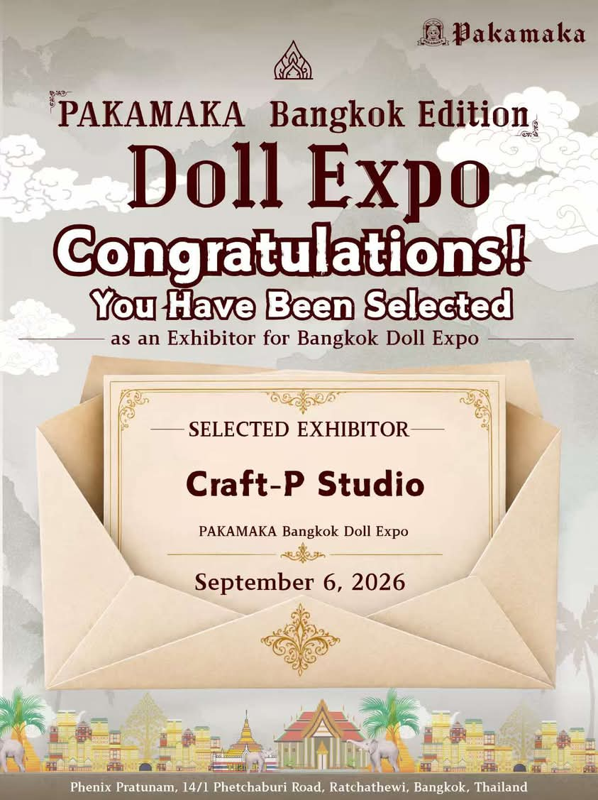
SEPTEMBER 6, 2026
Selected Exhibitor
Phenix Pratunam, Bangkok
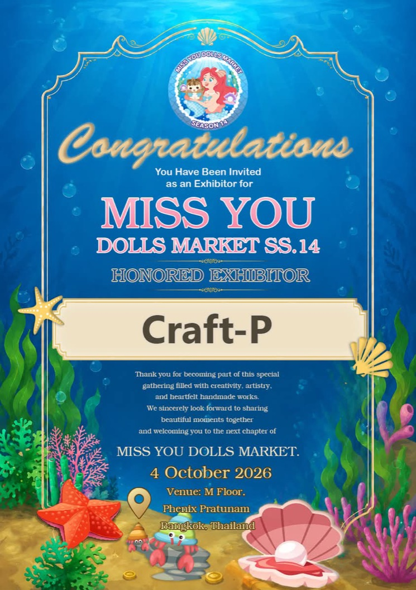
OCTOBER 4, 2026
Honored Exhibitor
Phenix Pratunam, Bangkok
NOVEMBER 1, 2026
Queen Sirikit National Convention Center
10:30 – 18:30
PAST EVENTS
A collection of memories shared with collectors, friends, and everyone who stopped by to say hello.
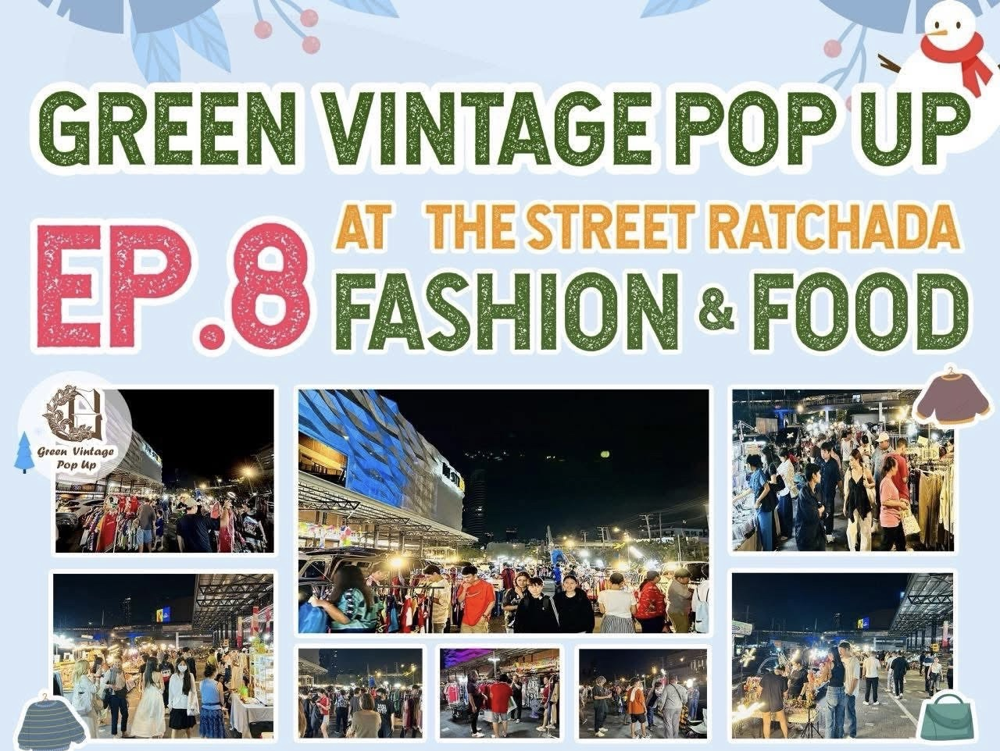
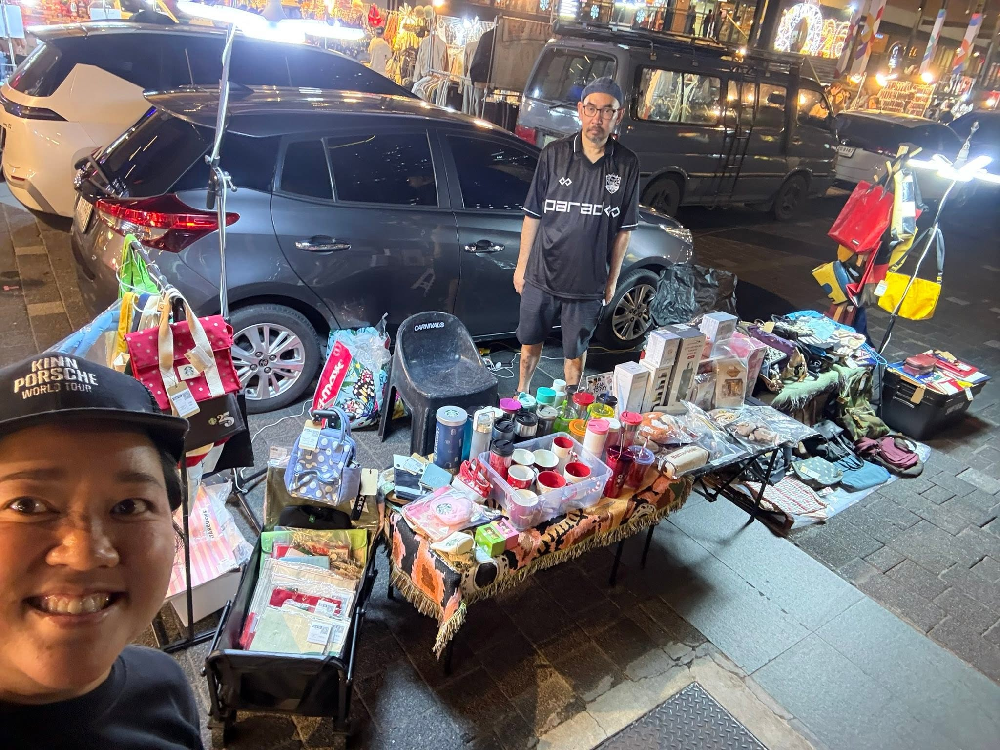
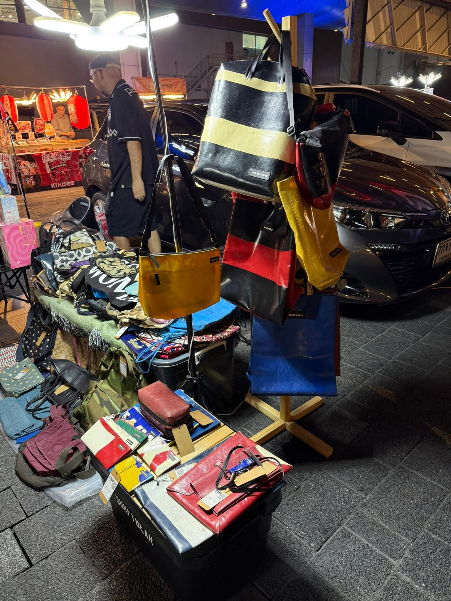
December 11-13, 2025
The Street Ratchada, Bangkok
"Stepping beyond the doll community."
Stepping beyond our familiar world, this was the first event where Craft-P joined a lifestyle market instead of a doll event. We shared both our handmade bags and personal collectibles, meeting new people and discovering that handmade stories can connect with everyone.
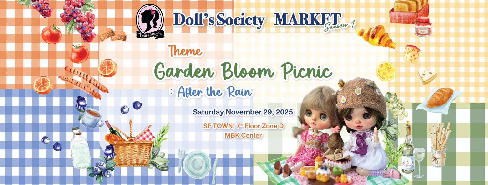
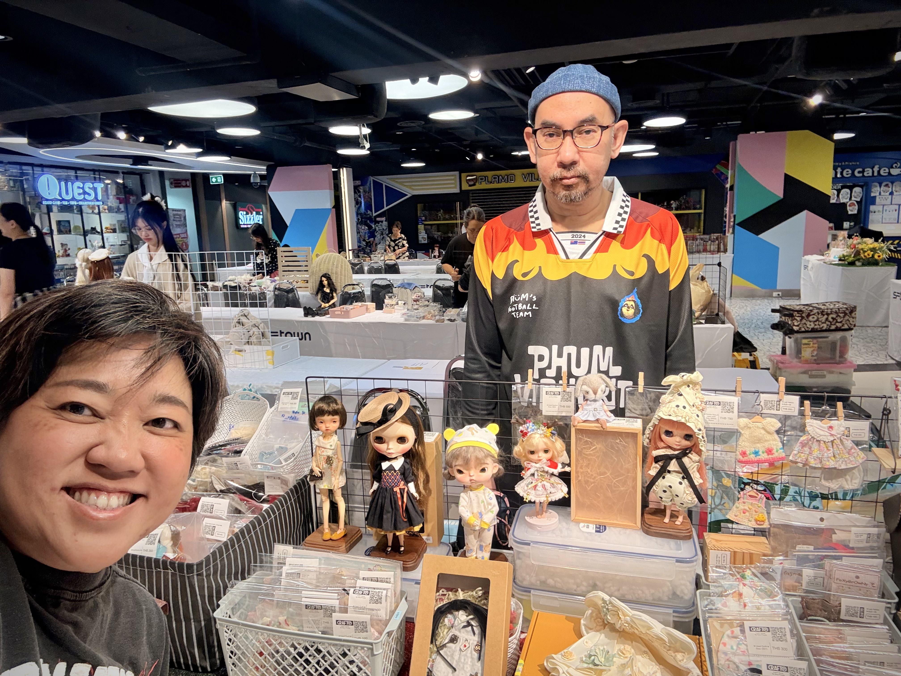
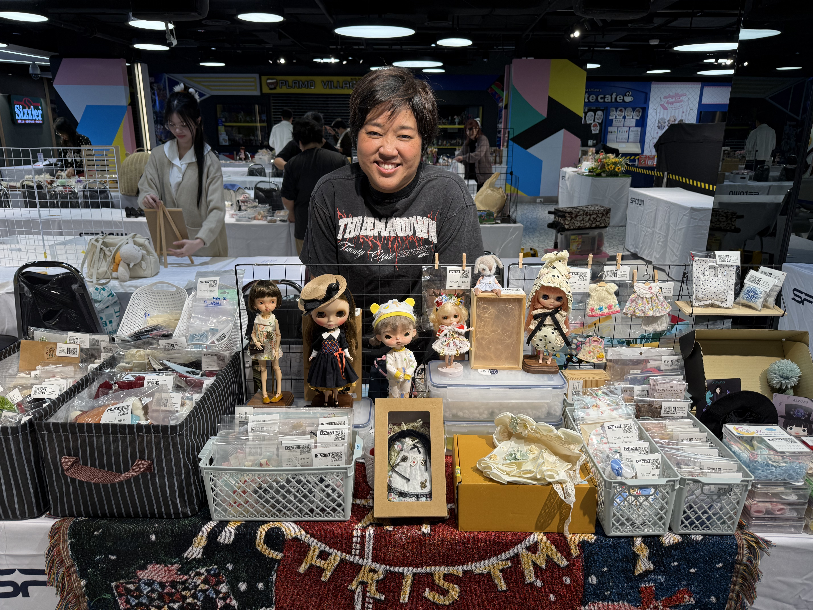
November 29, 2025
6th Floor MBK, Bangkok
"Meeting collectors who share the same love for handmade creations."
Thank you to everyone who stopped by the Craft-P booth. It was a wonderful day filled with conversations, new friendships, and a shared love for handmade creations.
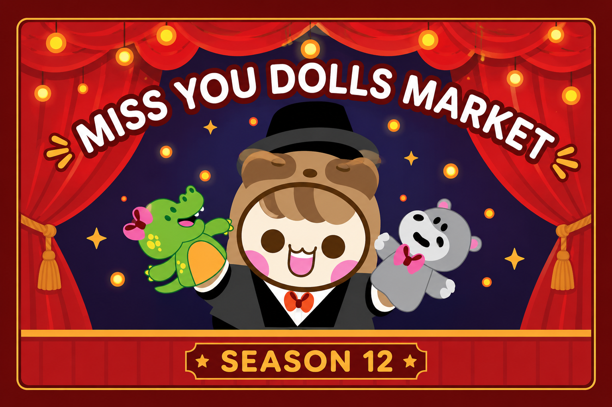
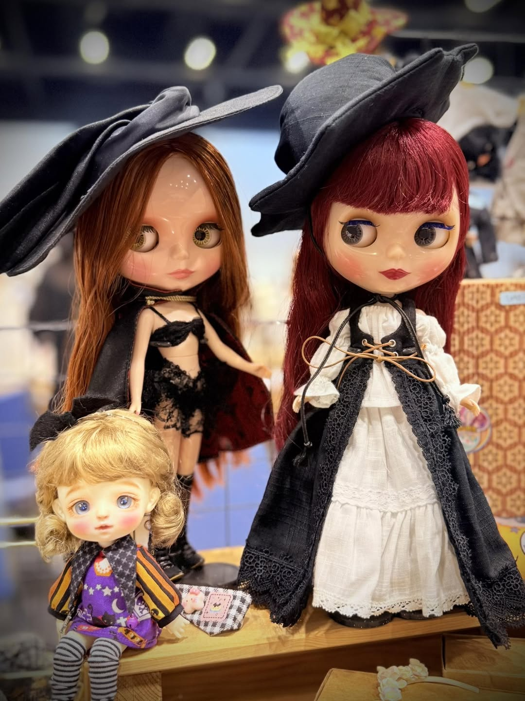
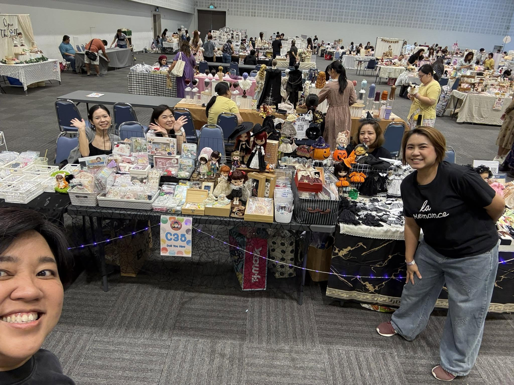
October 12, 2025
Central Changwattana, Bangkok
"Where the Craft-P journey began."
Every journey starts with a first step. Doll Meet & Party 2025 was the very first event where Craft-P introduced handmade creations to collectors. It marked the beginning of a journey that continues today.
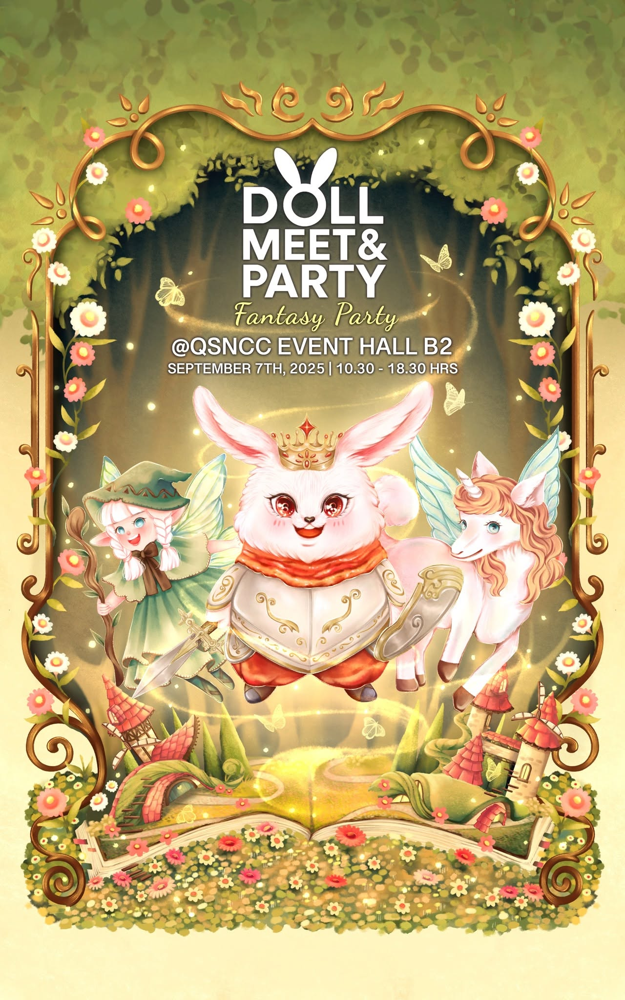
September 7, 2025
Even Hall, QSNCC, Bangkok
"The first step from collector to exhibitor"
After years of attending doll markets as a collector, this was the first time Craft-P stood behind the booth as an exhibitor. We carefully prepared multiple collections, thoughtfully designed our booth, and experienced the event from an entirely new perspective.